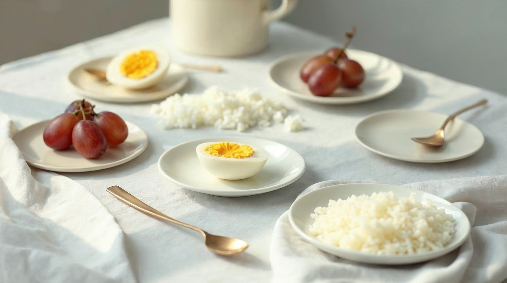
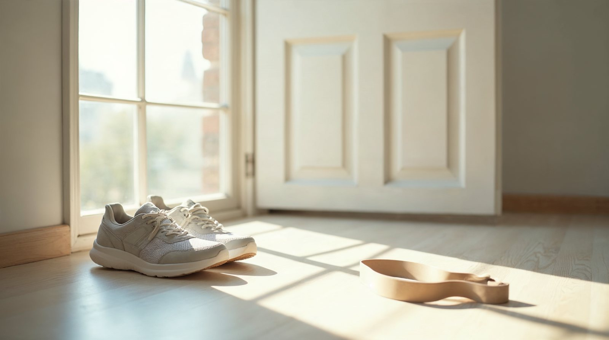
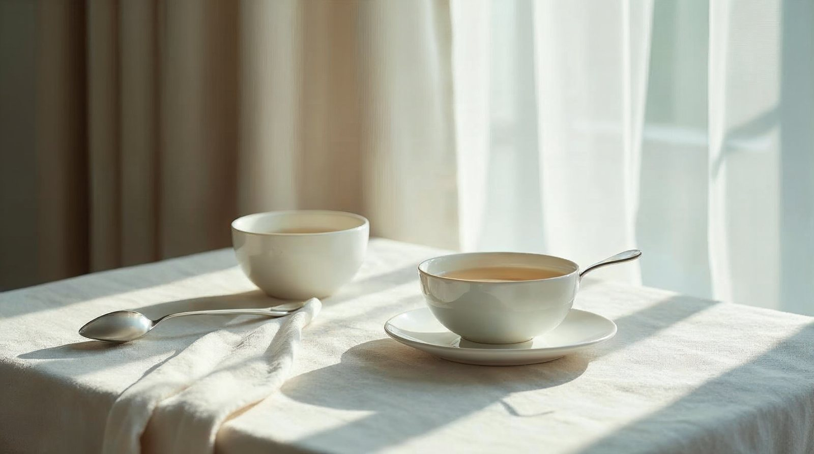
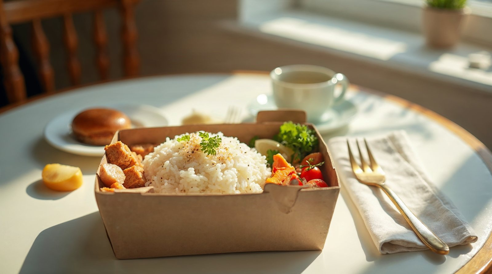

이종호 한의사 감수좋은꿈참사랑한의원 대표원장 (한의사 면허번호 19769)발행 2026-11-26 · 수정 2026-11-27
이 글의 차례
밥 한 공기를 다 먹던 때가 언제였나 싶으시죠. 몇 숟가락 뜨면 벌써 명치가 꽉 차오르고, 조금 더 먹으려 하면 식은땀이 나며 가슴이 두근거려요. 식사 시간이 기다려지기보다 조금 두려운 시간이 되어 버렸습니다.
위암이나 위궤양 같은 이유로 위의 일부나 전부를 떼어 내는 수술을 받으신 분들이 진료실에서 자주 하시는 이야기예요. 수술은 잘 마쳤는데 먹는 일이 예전 같지 않고, 체중계 숫자가 계속 내려가 마음이 쓰인다고 하세요.
그러니까 사실은 위 절제 뒤의 몸은 '약해진 몸'이 아니라 '음식을 받아들이는 방식이 바뀐 몸'이에요. 두 개가 다른 얘기거든요. 예전 방식대로 먹으면 불편이 생기고, 바뀐 방식에 맞춰 먹으면 한결 편해지는 경우가 많아요. 이 글에서는 그 바뀐 방식을 차근차근 정리해 보려고 해요.
수술 뒤 치료와 정기 검사는 수술한 병원의 안내를 따르시는 게 가장 먼저예요. 이 글은 그 안내를 따르시는 동안 일상의 식사와 체중, 기운을 어떻게 살피면 좋을지에 대한 이야기입니다.
위는 어떤 일을 했었나요
위는 음식을 잠시 담아 두는 주머니이자, 음식을 잘게 갈고 위산과 섞어 죽처럼 만드는 곳입니다. 그리고 그 죽을 조금씩, 장이 감당할 수 있는 속도로 내려보내는 문지기 역할도 합니다.
위를 떼어 내면 담아 둘 공간이 줄어들고, 조금씩 내려보내 주던 문지기 역할도 약해집니다. 그래서 조금만 먹어도 배가 차고, 먹은 음식이 장으로 한꺼번에 쏟아져 내려가기 쉬워집니다. 위 절제 뒤 불편의 대부분이 이 두 가지 변화에서 시작됩니다.
위는 철분과 비타민 B12, 칼슘이 잘 흡수되도록 돕는 일도 합니다. 그래서 수술 뒤 몇 달, 몇 년이 지나며 빈혈이나 뼈가 약해지는 문제가 천천히 생길 수 있어, 수술한 병원에서 정기적으로 혈액 검사를 안내받는 경우가 많습니다.
왜 먹고 나면 어지럽고 식은땀이 날까요
위 절제 뒤 식사를 하면 15~30분 안에 식은땀, 두근거림, 어지럼, 배가 꾸르륵거리고 설사가 나는 분이 있습니다. 음식이 장으로 한꺼번에 쏟아지면서 장으로 물이 몰리고 몸이 놀라는 반응으로, 흔히 덤핑 증상이라고 부릅니다.
식사하고 두세 시간쯤 지나서 갑자기 힘이 빠지고 손이 떨리며 식은땀이 나는 경우도 있습니다. 단 음식이 빠르게 흡수되며 혈당이 크게 올랐다가 반대로 뚝 떨어지면서 생기는 반응으로, 후기 덤핑이라고 나눠 부르기도 합니다.
이런 반응은 단 음식, 국물과 함께 빨리 먹는 식사, 한 번에 많이 먹는 식사에서 잘 생깁니다. 반대로 말하면 무엇을, 어떻게, 얼마나 먹느냐를 조절해서 줄여 볼 수 있는 경우가 많다는 뜻이기도 합니다. 반응이 자주 있다면 수술한 병원에도 알려 주세요.
위 절제 뒤 식사의 기본
위 절제 뒤 식사는 '조금씩, 자주, 천천히, 마른 것 먼저'로 정리할 수 있습니다. 처음에는 낯설지만 몇 주 이어 가다 보면 몸이 편한 방식이 손에 익습니다.
- 하루 세 끼 대신 대여섯 번으로 나눠 조금씩 먹기
- 한 숟가락을 입에 넣으면 서른 번 가까이 꼭꼭 씹기
- 한 끼에 20~30분 정도 시간을 두고 천천히 먹기
- 식사 중에는 국물과 물을 줄이고, 식사 전후 30분쯤 떨어져서 마시기
- 끼니마다 달걀, 두부, 생선, 살코기 같은 단백질을 먼저 챙기기
- 사탕, 주스, 단 빵처럼 빠르게 흡수되는 단 음식은 줄이기
식사 뒤 바로 눕기보다 상체를 조금 세우고 기대 앉아 쉬는 것이 편하다는 분이 많습니다. 덤핑 증상이 잦은 분은 오히려 식후 잠깐 비스듬히 누워 쉬는 것이 편하다는 경우도 있어서, 내 몸에 맞는 자세를 찾아 적어 보세요.

체중이 계속 빠질 때
위 절제 뒤 몇 달 동안은 체중이 줄어드는 것이 흔합니다. 먹는 양이 줄고 흡수가 달라지기 때문입니다. 수술 전 체중으로 돌아가는 것보다, 줄어든 체중이 어느 선에서 멈추고 근육이 지켜지는지가 더 중요합니다.
체중이 몇 달째 계속 빠지고 있다면 하루 동안 드신 것을 적어 보세요. 생각보다 끼니 수가 적거나, 단백질이 적고 국물 위주로 드시는 경우가 많습니다. 수술한 병원의 영양 상담을 함께 받으시면 내게 맞는 양을 정하는 데 큰 도움이 됩니다.
간식은 양이 적어도 영양이 촘촘한 것으로 고르시길 권합니다. 삶은 달걀, 두부, 플레인 요거트, 치즈, 견과류 한 줌, 바나나 반 개 같은 것들이 좋습니다. 영양 보충 음료는 단맛이 강한 것이 있어서 덤핑 증상이 있다면 천천히 나눠 드셔 보세요.

근육을 지키는 움직임
먹는 양이 줄면 몸은 근육부터 꺼내 쓰기 쉽습니다. 다리 힘이 빠지고 계단이 버거워지며 쉽게 지치는 것도 이 때문인 경우가 많습니다. 그래서 위 절제 뒤에는 먹는 것만큼 움직이는 것도 함께 챙겨야 합니다.
수술한 병원에서 허락한 범위 안에서, 하루 20~30분 걷기부터 시작해 보세요. 의자에서 손을 짚지 않고 일어났다 앉기, 벽을 짚고 발뒤꿈치 들기처럼 집에서 할 수 있는 가벼운 근력 운동을 조금씩 더하면 다리 힘을 지키는 데 도움이 됩니다.
운동 뒤에는 단백질이 든 간식을 조금 드시는 것이 좋습니다. 무리하게 운동량을 늘리기보다, 매일 조금씩 꾸준히 이어 가는 쪽을 권합니다. 어지럽거나 숨이 많이 차면 그날은 쉬어 가세요.
빈혈과 뼈, 놓치기 쉬운 것들
위 절제 뒤 몇 년이 지나 '요즘 왜 이렇게 숨이 차고 어지럽지' 하시는 분이 계십니다. 철분이나 비타민 B12가 부족해 생기는 빈혈인 경우가 있어서, 수술한 병원에서 안내하는 혈액 검사를 꾸준히 받으시는 것이 중요합니다.
비타민 B12는 위를 떼어 낸 뒤 먹는 것만으로는 잘 흡수되지 않는 경우가 있어 주사로 보충하기도 합니다. 손발 저림, 기억력이 흐려지는 느낌, 혀가 따끔거리는 느낌이 있다면 진료 때 말씀해 주세요.
칼슘과 비타민 D도 흡수가 줄어 뼈가 약해지기 쉽습니다. 우유나 요거트, 멸치, 두부를 식단에 챙기고, 낮에 햇볕 아래 걷는 시간을 만들어 보세요. 보충제가 필요한지는 수술한 병원과 상의해 정하시면 됩니다.

먹는 일이 두려워졌을 때
덤핑 증상이나 더부룩함을 몇 번 겪고 나면 먹는 일 자체가 두려워지는 분이 많습니다. 먹으면 불편하니 덜 먹게 되고, 덜 먹으니 기운이 빠지는 고리가 생깁니다. 이 마음을 알아차리는 것부터가 시작입니다.
식사를 혼자 서둘러 하기보다, 편안한 자리에서 천천히 드시는 시간을 만들어 보세요. 한 끼에 다 먹으려 애쓰지 않고 '오늘은 다섯 번 나눠 먹었다'는 것을 칭찬해 주시면 좋습니다. 가족에게도 이 식사 방식을 알려 두시면 서로 마음이 편해집니다. 먹는 일이 다시 즐거운 시간이 되도록, 좋아하는 그릇과 조용한 자리를 정해 두는 것도 작은 도움이 됩니다.

밖에서 먹어야 하는 날
일터로 돌아가거나 모임에 나가게 되면 집에서처럼 나눠 먹기가 어렵습니다. 그런 날은 가방에 작은 간식 통을 챙겨 다니시길 권합니다. 삶은 달걀, 치즈, 견과류처럼 상하지 않고 조금씩 꺼내 먹을 수 있는 것이 좋습니다.
식당에서는 국밥이나 면처럼 국물과 함께 빨리 넘어가는 음식보다, 생선구이나 두부 반찬이 있는 백반처럼 천천히 씹을 수 있는 메뉴가 편합니다. 다 먹으려 애쓰지 말고 남기는 것을 미리 마음먹고 가시면 한결 편합니다.
동료나 가족에게 '조금씩 자주 먹어야 한다'는 사정을 미리 말해 두면, 간식을 꺼내 먹는 일도 훨씬 덜 신경 쓰입니다. 몸의 사정을 알리는 것은 부끄러운 일이 아니라 나를 돌보는 일입니다.
감기나 장염처럼 아픈 날의 식사
위 절제 뒤에는 감기나 장염으로 며칠만 덜 먹어도 체중과 기운이 쉽게 떨어집니다. 아픈 날에는 평소처럼 먹으려 애쓰기보다 미음, 죽, 계란찜처럼 부드러운 음식을 조금씩 자주 드시는 것을 목표로 삼으세요.
열이 나거나 설사가 이어지는 날에는 물을 조금씩 자주 드셔 몸의 물기를 지켜 주세요. 이런 날이 사나흘 넘게 이어지고 먹는 양이 거의 없다면 수술한 병원이나 가까운 내과에 알리시는 것이 좋습니다.
먼저 이렇게 여쭙니다
수술 이야기를 들으며, 저는 대략 이런 순서로 여쭙니다.
- 언제, 어떤 수술을 받으셨나요? 위를 얼마나 떼어 내셨나요?
- 지금 받고 계신 치료나 정기 검사 일정이 있나요?
- 하루 몇 번, 한 번에 어느 정도 드시나요?
- 식후 어지럼, 식은땀, 설사는 식사 뒤 언제 오나요?
- 수술 뒤 체중은 어떻게 변했나요? 최근 한두 달 사이에도 빠지고 있나요?
- 최근 혈액 검사에서 빈혈이나 다른 이야기를 들으셨나요?
모두 정확히 기억하지 못하셔도 괜찮습니다. 수술한 병원에서 받은 안내문과 드시는 약만 챙겨 오셔도 이야기를 시작할 수 있습니다.
일상에서 먼저 해 볼 수 있는 것
- 하루 대여섯 번으로 나눠, 단백질 반찬부터 먼저 먹기
- 한 끼 20~30분, 숟가락을 자주 내려놓으며 천천히 먹기
- 물과 국물은 식사 전후 30분쯤 떨어져서 마시기
- 단 음료, 사탕, 단 빵은 줄이고 간식은 달걀·두부·요거트로
- 매주 같은 요일, 같은 시각에 체중 재어 적어 두기
- 하루 20~30분 걷고 가벼운 다리 근력 운동 더하기
모든 것을 한꺼번에 바꾸기 어렵다면 '천천히 먹기'와 '나눠 먹기' 두 가지부터 시작해 보세요. 이 두 가지만으로도 식후 불편이 줄었다는 분이 많습니다. 익숙해지면 그다음에 물 마시는 때를 식사와 떼어 놓는 것을 더해 보세요. 하나씩 손에 익히는 것이 오래 가는 방법입니다.
한의원에서 함께 살필 수 있는 경우
- 수술한 병원에서 회복이 순조롭다고 들었는데 식후 더부룩함과 묽은 변이 이어지는 경우
- 먹는 양이 늘지 않고 기운이 없으며 손발이 찬 경우
- 식사가 두려워지고 잠이 얕아져 몸과 마음이 함께 지친 경우
- 항암 치료를 마친 뒤 입맛과 기운이 돌아오지 않는 경우
좋은꿈참사랑한의원에 오시면 모든 분의 맥을 먼저 짚고, 식사와 대변, 잠, 기운을 여쭈며, 배를 눌러 보며 불편한 자리를 확인합니다.
진찰한 내용을 바탕으로 생활에서 바꿔 볼 것 하나와 함께 침, 온열 관리, 한약 상담 가운데 지금 상태에 맞는 것을 정합니다. 항암 치료 중이시거나 드시는 약이 많다면, 한약은 드시는 약을 모두 확인하고 담당 선생님과의 상의를 거쳐 신중하게 정합니다. 처방받은 약은 상의 없이 멈추지 않습니다.
이렇게 기록해 오시면 상담이 쉬워집니다
위 절제 뒤의 식사는 기록이 큰 힘이 됩니다. 2주 정도 적어 보세요.
- 하루 먹은 횟수와 시각, 대략의 양과 메뉴
- 식후 불편(어지럼, 식은땀, 설사, 더부룩함)이 온 시각
- 물과 국물을 마신 때
- 매주 같은 시각에 잰 체중
- 걷거나 운동한 시간, 잠든 시각과 깬 시각
빠진 날이 있어도 괜찮습니다. 적어 오신 줄 가운데 유독 힘들었던 날부터 함께 들여다보겠습니다.
바뀐 몸에 맞는 식사를 찾아가며
위 절제 뒤의 식사는 예전으로 돌아가는 길이라기보다, 바뀐 몸에 맞는 새 방식을 찾아가는 길이에요. 시간이 지나며 한 번에 드실 수 있는 양이 조금씩 늘어나는 분이 많아요.
체중계 숫자가 하루하루 오르내리는 것에는 너무 마음 쓰지 않으셨으면 해요. 원래 그렇게 출렁여요. 한 달 단위로 흐름을 보면 멈추거나 조금씩 오르는 시기가 보이기 시작하거든요. 숫자보다 계단을 오를 때의 다리 힘, 아침의 기운처럼 몸이 느끼는 변화도 함께 적어 두세요.
식사를 준비하는 가족에게도 이 시간은 낯선 시간이에요. 한 번에 많이 차리기보다 작은 그릇에 조금씩 자주 내는 방식으로 함께 바꿔 가시면, 차리는 사람도 먹는 사람도 부담이 줄어요. 혼자 애쓰지 않으셔도 돼요.
기운을 살피는 건 제가 맡을게요. 대신 하나만 부탁드려요. 한 입 드실 때마다 수저를 잠깐 내려놓고, 천천히 씹어 주세요. 다음에 오시면 그 일주일 동안 식사가 어땠는지부터 여쭙겠습니다.
이런 증상은 먼저 확인이 필요합니다
- 검은 변을 보거나 피를 토하는 경우
- 먹는 대로 토하고 물도 넘기기 어려우면서 배가 심하게 아픈 경우
이런 신호가 있으면 한의원보다 가까운 병원이나 응급실을 먼저 찾으세요.
함께 읽으면 좋은 글
- 조금만 먹어도 금방 배가 부를 때는 무엇을 살펴보나요?
- 아무리 먹어도 살이 붙지 않는 마른 체질, 체중을 늘리려면 무엇부터 살피나요?
- 위궤양이나 십이지장궤양 치료를 받고 회복하는 동안에는 식사와 생활을 어떻게 살피나요?
- 체중은 정상인데 인바디에서 근육량이 적게 나왔다면 무엇부터 살피나요?
- 소화가 오래 불편할 때 한의원에서는 무엇을 먼저 묻나요?

여쭙는 것
- 언제, 어떤 수술을 받으셨나요? 위를 얼마나 떼어 내셨나요?
- 지금 받고 계신 치료나 정기 검사 일정이 있나요?
- 하루 몇 번, 한 번에 어느 정도 드시나요?
생활에서 해 볼 것
- 하루 대여섯 번으로 나눠, 단백질 반찬부터 먼저 먹기
- 한 끼 20~30분, 숟가락을 자주 내려놓으며 천천히 먹기
- 물과 국물은 식사 전후 30분쯤 떨어져서 마시기
한의원에서 함께 살필 것
- 수술한 병원에서 회복이 순조롭다고 들었는데 식후 더부룩함과 묽은 변이 이어지는 경우
- 먹는 양이 늘지 않고 기운이 없으며 손발이 찬 경우
- 식사가 두려워지고 잠이 얕아져 몸과 마음이 함께 지친 경우
먼저 확인이 필요한 신호
- 검은 변을 보거나 피를 토하는 경우
- 먹는 대로 토하고 물도 넘기기 어려우면서 배가 심하게 아픈 경우
한눈에 보는 표
| 구분 | 핵심 |
|---|---|
| 여쭙는 것 | 언제, 어떤 수술을 받으셨나요? 위를 얼마나 떼어 내셨나요? 지금 받고 계신 치료나 정기 검사 일정이 있나요? |
| 생활에서 해 볼 것 | 하루 대여섯 번으로 나눠, 단백질 반찬부터 먼저 먹기 한 끼 20~30분, 숟가락을 자주 내려놓으며 천천히 먹기 |
| 한의원에서 함께 살필 것 | 수술한 병원에서 회복이 순조롭다고 들었는데 식후 더부룩함과 묽은 변이 이어지는 경우 먹는 양이 늘지 않고 기운이 없으며 손발이 찬 경우 |
| 먼저 확인이 필요한 신호 | 검은 변을 보거나 피를 토하는 경우 먹는 대로 토하고 물도 넘기기 어려우면서 배가 심하게 아픈 경우 |
자주 묻는 질문
위 절제 뒤 체중은 언제쯤 멈추나요?
수술 뒤 몇 달 동안 줄어드는 경우가 많고, 이후 어느 선에서 머무는 분이 많습니다. 몇 달이 지나도 계속 빠진다면 수술한 병원의 영양 상담을 함께 받아 보시길 권합니다.
식후에 식은땀이 나고 어지러운데 괜찮은 건가요?
음식이 장으로 빠르게 내려가며 생기는 덤핑 증상일 수 있습니다. 천천히, 나눠, 단 음식을 줄여 드시면 덜해지는 분이 많고, 자주 있다면 수술한 병원에도 알려 주세요.
위를 떼어 낸 뒤 한약을 먹어도 되나요?
수술 시기와 회복 상태, 받고 계신 치료와 드시는 약을 모두 확인한 뒤 신중하게 정합니다. 항암 치료 중이라면 담당 선생님과 먼저 상의하시도록 안내합니다.
영양제는 무엇을 먹어야 하나요?
철분, 비타민 B12, 칼슘, 비타민 D가 부족해지기 쉬워 혈액 검사 결과를 보고 수술한 병원에서 보충 여부를 정하는 경우가 많습니다. 사서 드시는 제품이 있다면 함께 가져와 주세요.
침 치료는 수술한 배에도 놓나요?
수술 부위와 회복 상태를 살펴 자리를 고릅니다. 수술한 지 얼마 되지 않았다면 배보다 손발과 등 쪽을 중심으로 부담이 적게 시작합니다.
좋은꿈참사랑한의원은 재진 때 지난번 이야기부터 이어서 여쭙니다. 진료시간과 예약은 오시는 길에서 확인하세요.
어디서 상담받을 수 있나요?
좋은꿈참사랑한의원은 서울 동작구 만양로2길 2 신성빌딩 3층·5층(서울 동작구 상도동, 7호선 상도역 3번 출구 근처)에 있습니다. 한의사 3명(이종호 대표원장, 조영기 수석진료원장, 정원영 진료원장)이 진료합니다. 진료시간은 평일 09:30~20:00(점심 13:00~14:00), 토·일·공휴일 09:30~15:00이며, 방문 전 전화로 확인을 권합니다. 예약은 네이버 예약, 카카오톡 상담, 전화 02-815-7510로 받습니다.
이 글은 일반적인 건강 정보이며 개인의 진단이나 치료를 대신하지 않습니다. 증상이 있거나 복용 중인 약이 있다면 진료를 통해 확인하세요. 치료 효과는 개인마다 다를 수 있습니다.
작성 기준: 일반적으로 알려져 있는 건강 정보를 참고해 정리했습니다(대표원장 감수). 증상 기록은 1~2주 동안 하루 1회, 비슷한 시간에 적어 오시면 지난 상태와 비교하기 쉽습니다.